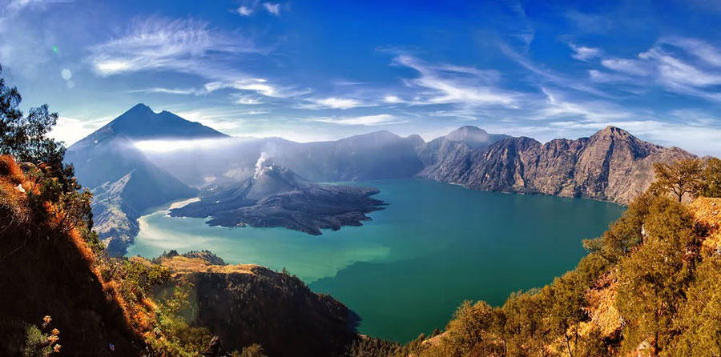

Gunung Rinjani
Gunung Rinjani adalah gunung yang berlokasi di Pulau Lombok, Nusa Tenggara Barat. Gunung yang merupakan gunung berapi kedua tertinggi di Indonesia dengan ketinggian 3.726 mdpl serta terletak pada lintang 8º25' LS dan 116º28' BT ini merupakan gunung favorit bagi pendaki Indonesia karena keindahan pemandangannya.